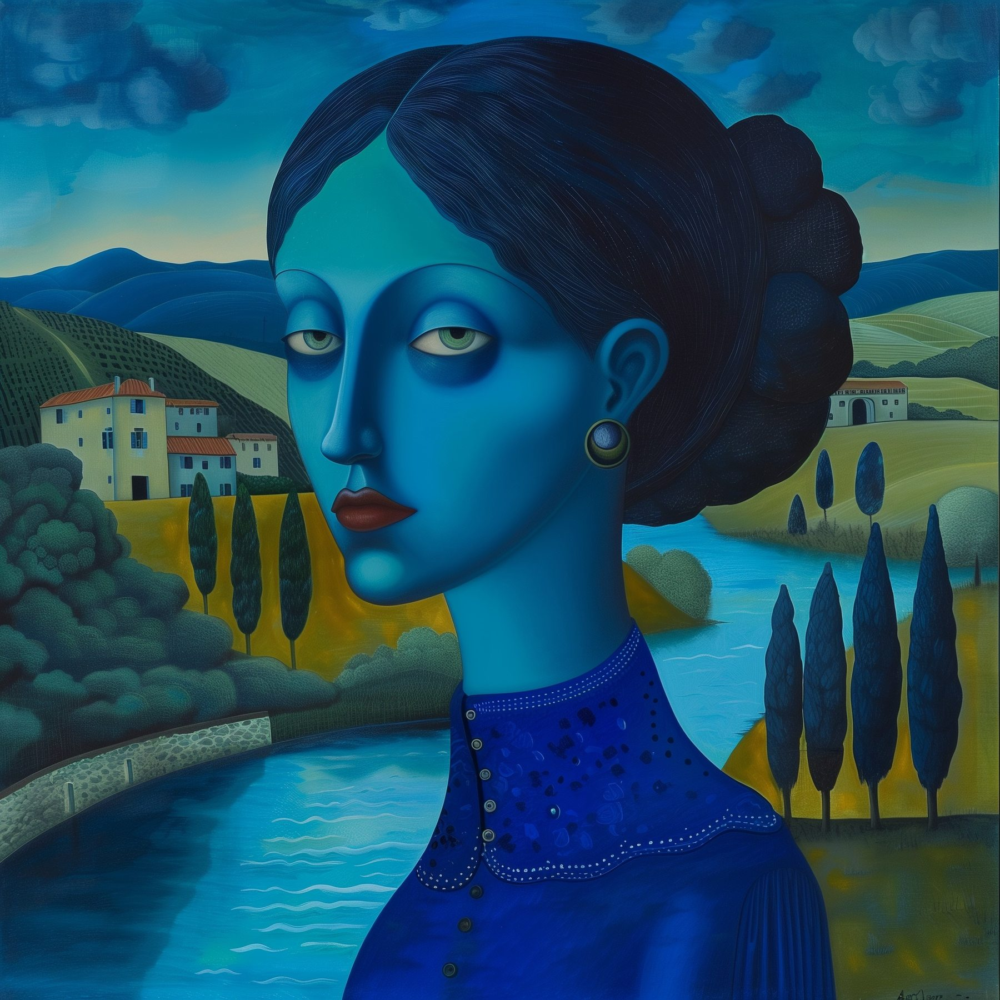

Photo Restoration
Repair of damaged, faded, scratched and aging photographs, including careful reconstruction, tonal correction and preservation of treasured memories.
FINE ART · PHOTOGRAPHIC RESTORATION · DIGITAL COMPOSITING
Original fine art, imaginative image-making, and meticulous photographic restoration. From treasured family photographs to distinctive commissioned artwork, every detail matters.
View selected work ↘
SELECTED FINE ART — BLEU FEMME01 / SELECTED WORK
A selection of original artwork, conceptual portraits, whimsical compositions and cinematic imagery. Available for commissioned projects and creative collaborations.
Select any artwork to view it in greater detail. Web images are optimized previews; high-resolution originals remain separate.
02 / CREATIVE SERVICES
Repair of damaged, faded, scratched and aging photographs, including careful reconstruction, tonal correction and preservation of treasured memories.
Portrait enhancement, color correction, image cleanup and detailed Photoshop editing, with natural-looking results tailored to each project.
Original illustrations, visual concepts and imaginative digital composites for collectors, personal gifts, editorial projects and businesses.
03 / SELECTED FILM CREDITS
Experience across editorial, post-production and visual effects on six feature films.
Editorial Production Assistant
Editorial Assistant
Post-Production Assistant
Visual Effects Assistant
Rotoscope Artist
Production Assistant — Troublemaker Digital Studios
Additional production experience includes visual-effects coordination work on Planet Terror. View filmography on IMDb ↗
04 / ABOUT THE ARTIST
Artist, visual storyteller, and hands-on image editor.
My work spans fine art, digital illustration, Photoshop restoration, compositing, and film production. I combine imagination with practical technical experience, whether creating an original image or restoring a treasured family photograph.
Each project receives individual attention, careful craftsmanship and respect for the client's vision.
05 / COMMISSIONS & CUSTOM PROJECTS
Have a photograph that needs restoring, a portrait that needs careful retouching, or an idea for custom artwork? I welcome inquiries about individual projects and creative collaborations.
Commission availability, scope and pricing are discussed individually. Please do not send private family photographs until we've agreed on the project.